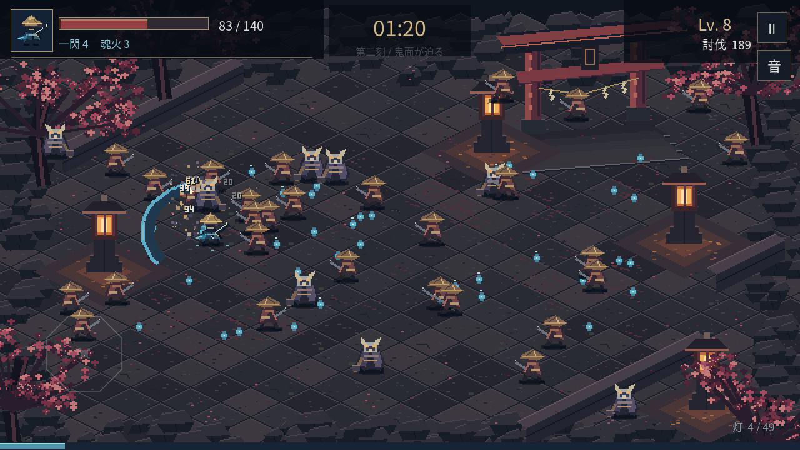

ANDROID / GODOT 4 / PROTOTYPE 0.1.1
朧火 OBOROBI
青い魂火を纏い、夜の境内で3分間生き残る。
片手で移動し、刀と魂火で群れを斬る。
約78MB · Android 7.0以降 · OpenGL ES 3.0対応端末
Godotのインストールは不要です。

インストール
- 上のボタンでAPKを保存します。アプリ内のブラウザで保存できない場合は、このページをChromeなどのブラウザで開いてください。
- スマホの「ファイル」アプリで、ダウンロードした Oborobi-Android.apk を開きます。
- インストール元の許可を求められた場合は、そのブラウザ／ファイルアプリについて「この提供元を許可」を有効にし、戻って「インストール」を押します。
- アプリ 「朧火」 を開き、「境内へ入る」をタップします。
遊び方
横画面で、戦場の空いている場所をドラッグすると移動します。指を離すと停止。攻撃は自動です。魂を集め、レベルアップの3択から強化を選びます。180秒生存でクリア。HPがなくなったら結果画面から再挑戦できます。
右上の停止ボタンやAndroidの「戻る」で一時停止。別のアプリへ切り替えた後は、再開ボタンを押してください。
署名とAPKの内容、Godot上の戦闘・タッチ操作は検証済みです。Android端末上での起動・性能は未検証です。プロトタイプ署名の直接インストール版です。